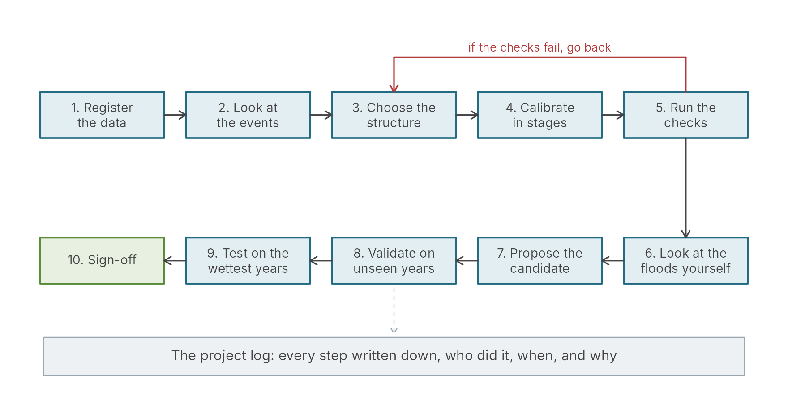
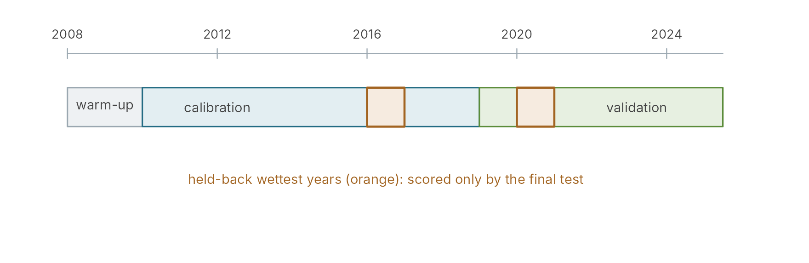
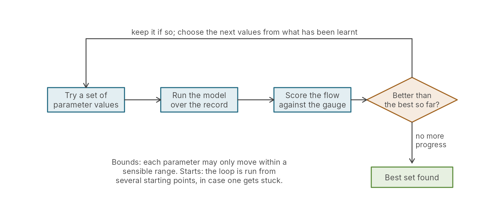
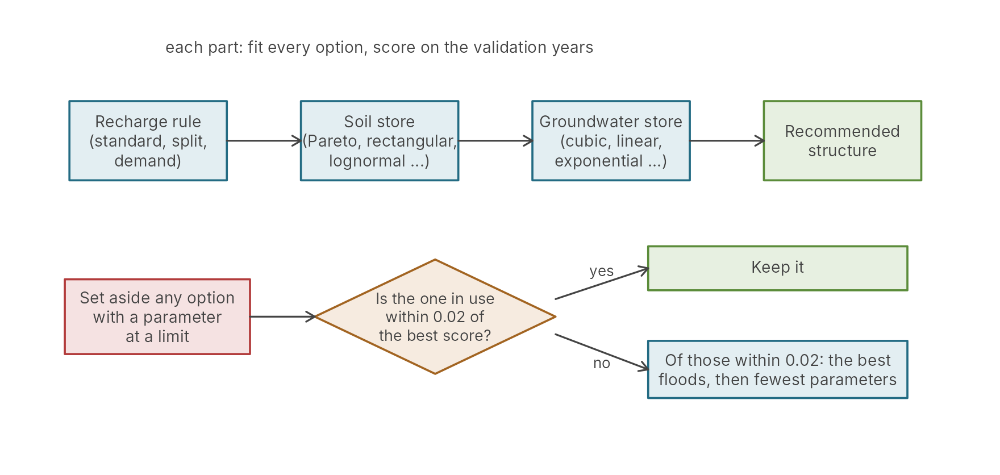
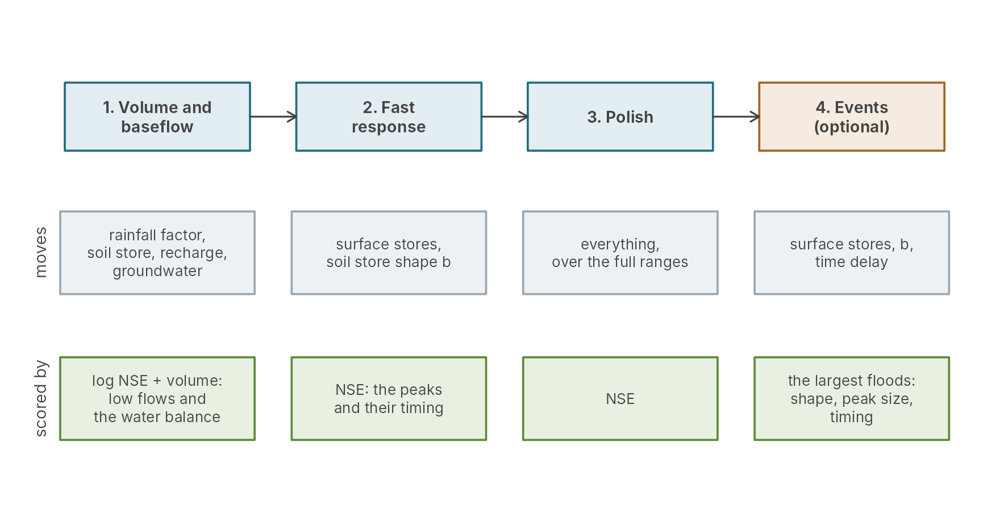
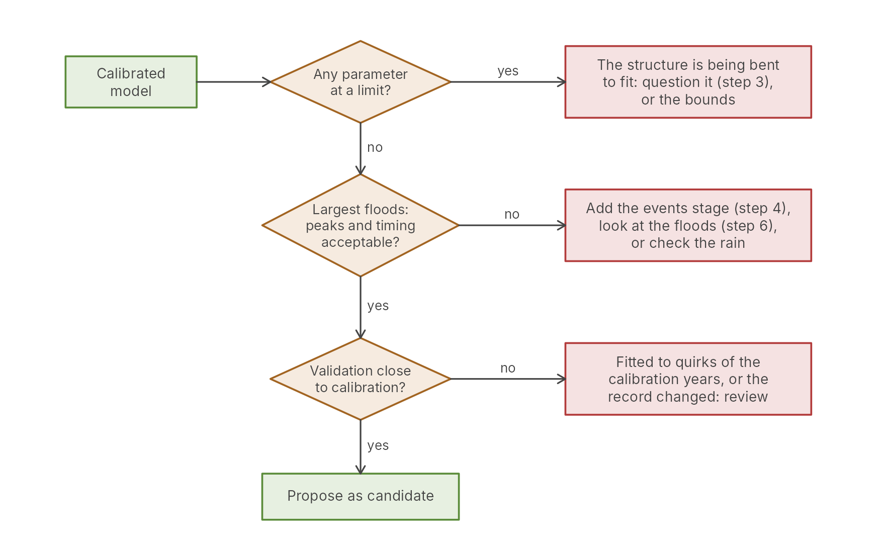
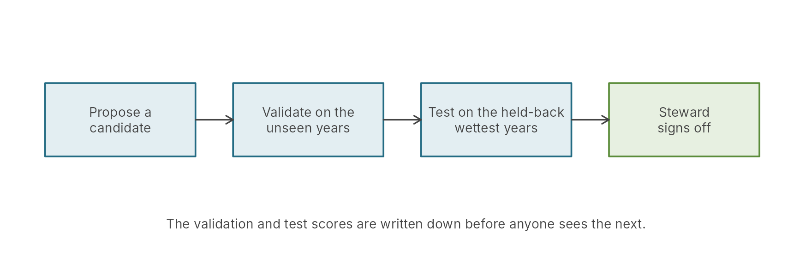
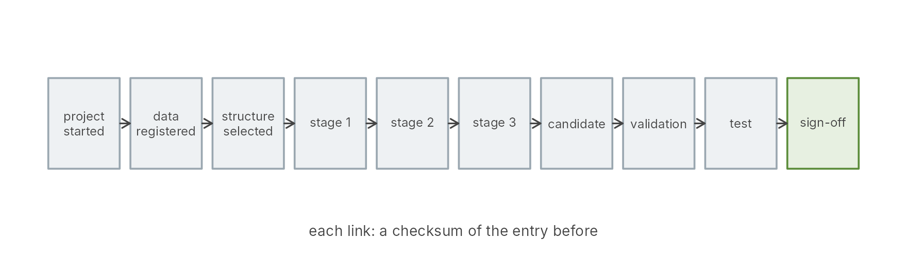

Automatic calibration from start to finish
pdmS7 documentation
Source:vignettes/calibration-journey.Rmd
calibration-journey.RmdAutomatic calibration means letting the computer find the model parameters that make the simulated river match the measured one. Done well, it is faster and more repeatable than calibrating by hand, and every step can be checked. Done carelessly, it produces a model that scores well and is wrong where it matters.
This article walks through a whole calibration in pdmS7, from the data to sign-off, in plain English and with diagrams. It explains what each step does and why it is there. The detail of each step is in its own article, linked as you go.
The whole journey

A calibration from start to finish. Every step writes an entry to the project log.
| Step | What happens | In pdmS7 |
|---|---|---|
| 1. Register the data | Rain, evaporation and flow are stored in the project, with the years for warming up, calibrating and validating |
start_calibration_project(),
register_data()
|
| 2. Look at the events | The floods are found in the record, and the doubtful ones set aside |
find_events(), screen_events()
|
| 3. Choose the structure | Which version of the model to fit: its soil store, recharge and groundwater store |
select_structure(),
recommend_structure()
|
| 4. Calibrate in stages | The search for parameters, one group at a time |
pdm_stages(),
log_staged_calibration()
|
| 5. Run the checks | Warning signs the score hides: parameters at their limits, floods late or low | calibration_checks() |
| 6. Look at the floods | The largest events side by side, adjusted by eye if need be |
event_workbench(), the app’s Events tab |
| 7. Propose | The chosen calibration is put forward, with the reasons | propose_candidate() |
| 8. Validate | The candidate is scored on years no calibration saw | validate_candidate() |
| 9. Test | The wettest years, held back from the start, are revealed | test_candidate() |
| 10. Sign-off | A Steward reviews the log and signs | sign_off_project() |
Steps 3 to 6 often go round more than once: the checks find a problem, and the hydrologist goes back to the structure, the stages or the rain.
Step 1: the data and the years
A calibration needs rain, potential evaporation and measured flow on the same time steps. Once registered, the data are copied into the project and fingerprinted, so that later steps can prove which data they used.
The record is then divided:

How the record is divided. The wettest years are held back from calibration and validation, and revealed only at the end.
- Warm-up. The model starts with its stores at a guess. A year or two of running lets them settle before anything is scored.
- Calibration. The years the search fits.
- Validation. Later years the search never sees. A model that does well here has learned the catchment, not the quirks of the calibration years.
- The wettest years, held back. The years with the largest floods are taken out of both windows at the start and scored only at the end. They test whether the model holds up on floods larger than anything it was fitted to, which is what a flood warning model is for.
See Larger floods for the held-back years and Getting started with data for preparing the files.
Step 2: what the search does
The model has a handful of parameters: how much water the soil holds, how fast the surface and groundwater stores drain, and so on. The search tries sets of values, runs the model over the calibration years with each, and keeps the one whose flow is closest to the measured flow.

The search loop. It runs hundreds or thousands of times, from several starting points.
Four things shape the search:
- The bounds. Each parameter may only move within a range a hydrologist would accept, from a table of sensible limits. A parameter that ends pressed against its limit is a warning sign (step 5).
- The score. Usually the Nash-Sutcliffe efficiency (NSE): 1 is a perfect match, 0 is no better than always predicting the average flow. Other scores weight low flows, volumes, or floods (see Scoring a simulation).
- The method. The default feels for the slope of the ground and walks downhill (L-BFGS-B): fast and reliable when the score changes smoothly. Where it changes in steps, as when counting floods or timing peaks to the hour, a method that tries points instead (DDS) is used.
- The starts. The ground may have several valleys. Starting the search from several places, and keeping the best result, guards against settling in a poor one.
Automatic calibration, explained shows each of these at work.
Step 3: choosing the structure
Before the numbers come the shape of the model: which kind of soil
store, recharge and groundwater store. pdmS7 offers several of each.
recommend_structure() chooses one part at a time, in the
order the record can best answer:

Choosing the structure one part at a time. Each part is chosen by the same rule, and the reason is written to the log.
Tests on made-up catchments, where the true structure was known, showed what a record can tell apart. The recharge rule was found every time, by a clear margin. The groundwater store was found only by margins too small to survive real data, so the rule keeps the standard store unless another is clearly better. See Choosing a model structure and What limits automatic calibration.
Step 4: calibrating in stages
A hydrologist calibrating by hand does not move everything at once. They settle the water balance first, then the shape of the floods, then make a final adjustment. The staged calibration does the same:

The four stages. Each starts from where the last left off. Stage 4 is optional, for models whose floods matter most.
- Stage 1 fits the parts that control how much water there is and how the river falls between storms, judged on log flows so that the floods do not dominate.
- Stage 2 fits the parts that shape each flood, with the water balance held.
- Stage 3 lets everything move together over its full range, to fix anything the first two missed. It must be free to move far: a polish kept close to stage 2 can lock in a wrong first stage.
- Stage 4, the events stage, refits the flood-shaping parts and the time delay on the largest floods alone. Over a long record most hours are quiet, so a model can score well with every peak late and low; this stage puts the floods first. See Getting the floods right.
Step 5: the checks
A good score is not enough. Before accepting a calibration,
calibration_checks() asks the questions the score
hides:

The checks after a calibration, in order. Each failure points back to a different step.
- A parameter at its limit is the clearest warning sign. It means the search wanted to go further than a sensible value, usually to make up for something the structure cannot do. In one real catchment, three of seven parameters at their limits came with a score of 0.90 and the largest flood 47% low and 16 hours late.
- The largest floods in each window: the median peak error, timing error and how many peaks fall within 20%. Floods the rain gauges plainly missed, or rises lost in a high baseflow, are set aside first.
- Validation against calibration. Some fall in score on unseen years is normal. A large fall means the model has learned the calibration years rather than the catchment.
Step 6: looking at the floods yourself
Scores summarise; they do not show. The events workbench draws the largest floods side by side, before and after a change, and redraws them in a fraction of a second as sliders move in the app’s Events tab. A setting the hydrologist believes is saved as a trial, with a verdict and the reasons. Judgement stays with the hydrologist, and the log records it. See Logging a manual calibration.
Steps 7 to 10: candidate, validation, test, sign-off

The last steps. Each is a separate, signed entry in the log.
The candidate is proposed first, then validated, then tested, in that order and only once each. A model cannot be quietly re-tuned after its test has been seen, because the log shows the order in which things happened. The Steward reads the log, checks the reasoning at each step, and signs. See the Steward’s guide.
Everything is written down
Every step above writes an entry to the project log: what was done, the data and settings used, the scores, who did it, when and why. Each entry carries a checksum of the one before, so the chain cannot be edited without it showing.

The log as a chain of entries. Each entry carries a checksum of the one before.
Here is a real, if small, calibration run through the steps, and the log it leaves:
rain <- synthetic_rain("2020-10-01", years = 2, dt = 1, seed = 3)
forcing <- data.frame(time = rain$time, rain = rain$rain, pet = rain$pet)
truth <- pdm_presets("standard")
truth$area_km2 <- 30
truth$td <- 2
model <- pdm_from_config(truth)
observed <- run_pdm(model, forcing, initial_state_from_flow(model, 0.5, 0.7))$output$q_m3s
options(pdmS7.user = "A Hydrologist", pdmS7.role = "custodian")
project <- file.path(tempdir(), "journey")
unlink(project, recursive = TRUE)
start_calibration_project(project, "Example Brook", "00002", "Journey article", 30,
"An Owner", "A Steward")
register_data(project, forcing, observed, calibration = c("2021-01-01", "2022-03-31 23:00"),
validation = c("2022-04-01", "2022-09-30 23:00"), wettest_years = 0)
start <- pdm_presets("standard")
start$area_km2 <- 30
structure <- select_structure(project, start, "Standard PDM to start from")
fits <- log_staged_calibration(project, structure$id, "Four stages, with the events stage.",
stages = pdm_stages(start, events = TRUE, event_budget = 60),
starts = 1, seed = 1, control = list(maxit = 15))
propose_candidate(project, fits[[length(fits)]]$id, "Final stage of the staged calibration.")
validate_candidate(project, "Validation year.")
entries <- read_project(project)$entries
entries[, c("id", "type")]
#> id type
#> <char> <char>
#> 1: 0001 project_start
#> 2: 0002 data_registered
#> 3: 0003 structure_selected
#> 4: 0004 auto_calibration
#> 5: 0005 auto_calibration
#> 6: 0006 auto_calibration
#> 7: 0007 auto_calibration
#> 8: 0008 candidate
#> 9: 0009 validation
checks <- calibration_checks(project, top = 5)
checks$parameters[, c("path", "value", "lower", "upper", "at_bound")]
#> path value lower upper at_bound
#> 1 distribution.b 4.460426e-01 5e-02 2.0e+00 <NA>
#> 2 surface.k1 4.218624e+00 5e-01 7.2e+01 <NA>
#> 3 surface.k2 2.800283e+00 5e-01 7.2e+01 <NA>
#> 4 td 1.385175e+00 0e+00 6.0e+00 <NA>
#> 5 fc 1.005471e+00 6e-01 1.6e+00 <NA>
#> 6 distribution.cmax 3.017009e+02 2e+01 8.0e+02 <NA>
#> 7 recharge.kg 4.182718e+03 1e+00 5.0e+03 <NA>
#> 8 groundwater.kb 1.092101e+04 1e+02 1.0e+06 <NA>
checks$summary[, c("period", "events", "median_peak_error", "median_timing_error_h")]
#> period events median_peak_error median_timing_error_h
#> 1 calibration 5 -0.01894972 0
#> 2 validation 5 -0.04826028 0
#> 3 outside 5 -0.02385834 0Each row is one entry, from the start of the project to the
validation of the candidate; the four automatic calibration entries are
the four stages. In the parameter table, at_bound is empty
(NA) when a parameter sits clear of its limits, and reads
lower or upper when it does not; here none
does. The largest floods in every window peak within a few percent of
the measured peaks, and in the same hour.
One number is a reminder of what a good fit does not prove. The events stage found a time delay of 1.4 hours, against the true 2 used to make the record. The two surface stores came out at 4.2 and 2.8 hours, against a true 2 and 4: the same two stores the other way round, which give the same flood, with the shorter delay making up the difference. The floods come out right; the parameters behind them are not unique. This is why the checks look at the floods themselves, and why What limits automatic calibration matters before reading too much into any one value.
Many catchments at once
The same journey can be run over many catchments with
calibrate_batch(), which runs each catchment’s project
through the stages, survives interruptions, and resumes where it
stopped. The checks and the structure choice then become questions
across the sample: which catchments failed which check, and which
structure won where. See Calibrating many
catchments.
Where to go next
| To learn about | Read |
|---|---|
| How the search works, bounds, scores, starts | Automatic calibration, explained |
| Why a good score can hide bad floods | Getting the floods right |
| The rain the model is given | Catchment rainfall from gauges and radar |
| Choosing the structure | Choosing a model structure |
| What a record can and cannot tell | What limits automatic calibration |
| The log, trials and sign-off | Logging a manual calibration |
| Many catchments | Calibrating many catchments |